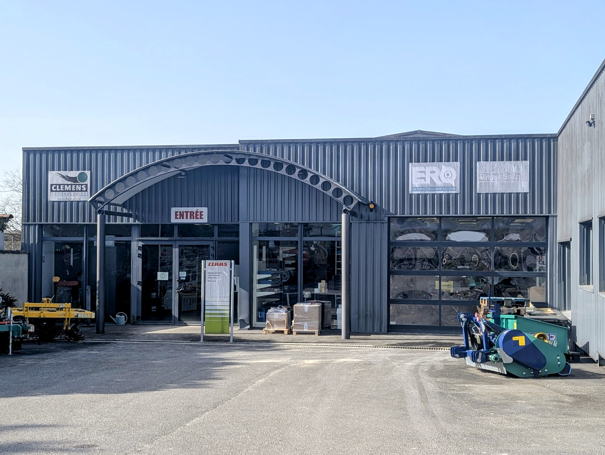
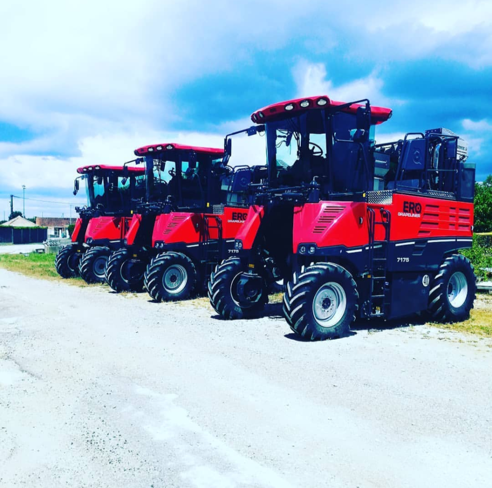

Quincaillerie & libre-service
Le nouveau magasin de proximite pour vos besoins du quotidien
L'agrandissement du magasin renforce l'offre locale a partir d'avril 2026. Les professionnels et les particuliers trouvent sur place les references utiles, avec un conseil concret pour acheter vite et juste.

Un parcours simple, oriente resultat
L'objectif est clair: donner envie de venir. Les categories sont lisibles, l'adresse et les horaires sont visibles, et l'equipe est joignable sans attente.
Outillage & bricolage
Selection fiable pour entretien, depannage, chantier et usage quotidien.
Quincaillerie technique
Fixations, consommables, produits de maintenance et references atelier.
Conseil comptoir
Un interlocuteur terrain pour orienter vers la bonne solution des la premiere visite.

Parcours client recommande
Un appel de 2 minutes permet de verifier la disponibilite. Ensuite, vous venez en magasin, vous etes oriente rapidement, et vous repartez equipe.
Ce que le client trouve en ligne
- Adresse exacte, horaires et acces Google Maps en un clic.
- Numero de telephone visible sur chaque ecran.
- Lien email direct pour les demandes detaillees.
- Message clair: magasin local oriente service et disponibilite.
Vous cherchez une reference en quincaillerie ?
Appelez l'equipe avant votre passage pour confirmer la disponibilite et gagner du temps en magasin.
MAUNAIS MAINGARD accompagne particuliers et professionnels avec une approche locale, concrete et efficace.